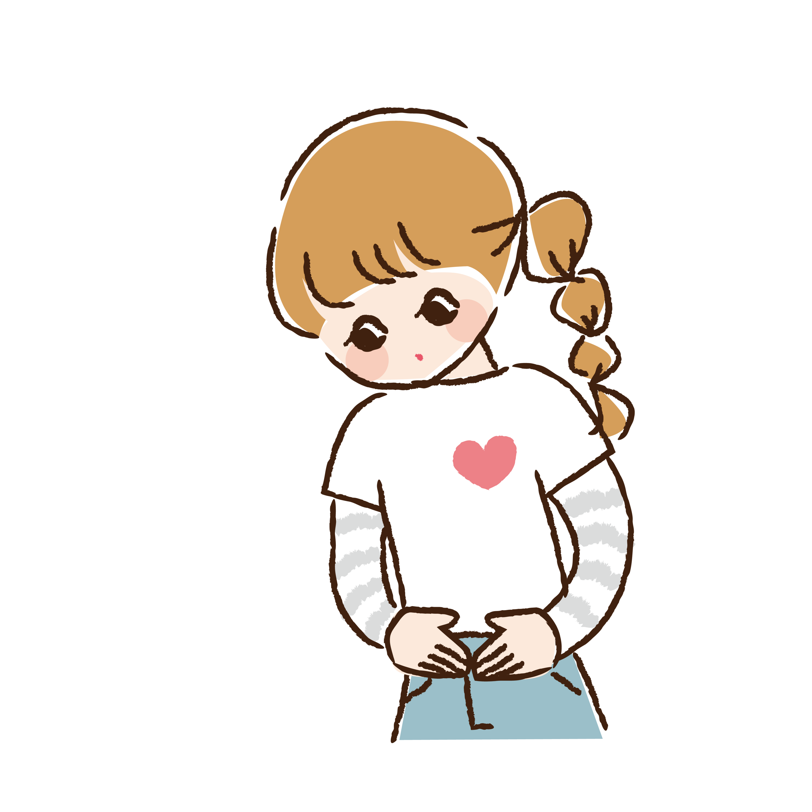

女性の身体と生理のしくみ

身体の仕組みってどうなっているの？
私たちの体は多くの臓器や組織で構成されており、それらの仕組みを理解することは健康を考える上で重要です。特に「乳房」「子宮」「卵巣」などの女性特有の臓器は、互いに連携しながら体の健康を支えています。
この働きを調整する重要な役割を担うのが「ホルモン」です。ホルモンは内分泌腺で作られ、血液を通じて全身に運ばれ、臓器や組織の働きを促します。内分泌腺ごとに異なるホルモンが分泌され、それぞれが体の機能を整えたり調子を保つ役割を果たしています。
このようにホルモンは私たちの健康に欠かせない存在です。

脳（視床下部・下垂体）：ホルモン分泌の指令塔で、体全体のホルモンを調整。
甲状腺：新陳代謝を活発にし、成長を助けるホルモンを生成。
腎臓（副腎）：血圧調整や血液・骨の健康を支えるホルモンを生成。
膵臓：血糖値を下げるホルモン「インスリン」を作る。
子宮（卵巣）女性ホルモン「エストロゲン」と「プロゲステロン」を生成し、妊娠・出産に関与。
乳房：出産時に母乳を作るための機能を持つ。
ホルモンは体の働きを支える重要な役割を担っています。その調整は脳の「視床下部」が指示を出し、「下垂体」がその指令を受け取って、全身の内分泌腺にホルモン分泌を促す仕組みになっています。
毎月いらなくなった子宮内膜を体外に排出するための『生理』
女性の体では約1ヵ月ごとに「排卵」と「生理」が起こります。このサイクルは脳からのホルモンの指示によって進行します。まず、脳の視床下部から「GnRH」が分泌され、下垂体が「FSH（卵胞刺激ホルモン）」を放出します。これが卵巣を刺激し、卵胞が成熟して「エストロゲン」を分泌、子宮内膜を厚くして受精卵を迎える準備を進めます。
次に、「LH（黄体化ホルモン）」が分泌されると排卵が起こり、卵胞は「黄体」に変化して「プロゲステロン」を分泌。子宮内膜をさらに整えます。妊娠が成立しない場合、ホルモン分泌が止まり、子宮内膜がはがれ生理として排出されます。
このサイクルを繰り返すことで、体は妊娠の準備を整え、健康を保っています。